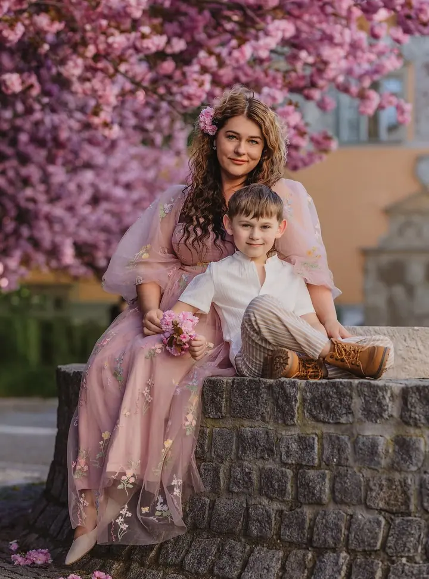
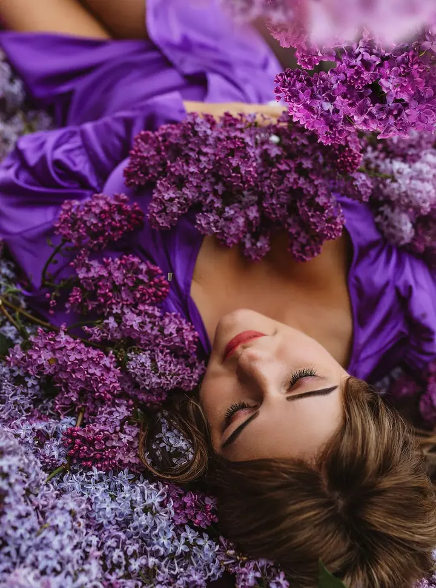

jedna
Rodinné a párové focení
Focení venku v přírodě, nejraději při západu slunce, kdy má každá fotka úplně jinou atmosféru. Fotím i narozeninová a tematická focení, třeba na podzim nebo na Vánoce.

Rodinná a portrétní fotografka · Prostějov a okolí, Horní Štěpánov

Jmenuji se Lucie Blaha Eyerová a fotím rodiny, portréty a miminka v Prostějově a okolí. Nejraději fotím venku při západu slunce, miminka pak v malém ateliéru u nás doma v Horním Štěpánově.
Více o mněCo fotím
jedna
Focení venku v přírodě, nejraději při západu slunce, kdy má každá fotka úplně jinou atmosféru. Fotím i narozeninová a tematická focení, třeba na podzim nebo na Vánoce.
dvě
Miminka fotím nejraději. Proto mám od února 2022 doma v Horním Štěpánově svůj malinkatý ateliér.
tři
Portrétní focení venku i s nápadem, s květinami, látkami a barvami, které vám sednou. Vhodné i jako dárek k narozeninám.
Svatební den nafotím ve dvou balíčcích, menším nebo velkém. Ráda vás vezmu i na focení do přírody.
Západ slunce dodá každé fotce úplně jinou atmosféru.
Za objektivem
Jmenuji se Lucie Blaha Eyerová a jsem fotografka na volné noze. Vystudovala jsem hotelnictví a cestovní ruch, po škole jsem ale nastoupila jako personalistka do jedné japonské firmy. Práce mě bavila, jenže mě bavilo i focení.
Naplno jsem se mu začala věnovat po narození syna Maxe. Ten mi stojí modelem pokaždé, i když je to někdy celkem dřina. Ráda fotím venku v přírodě, hlavně při západu slunce.
Nejraději ze všeho fotím miminka, a tímto směrem chci jít i dál. Díky své rodině mám od února 2022 doma svůj malinkatý ateliér. Najdete mě v Horním Štěpánově a fotím v Prostějově a okolí.
Lucie
Ozvěte se přes formulář, e-mail nebo zprávu na Instagramu. Napište, jaké focení si přejete a kdy by se vám hodilo.
Společně vybereme termín a místo, venku v přírodě, nebo u mě v ateliéru v případě miminek. Mimo Horní Štěpánov se připočítává cestovné.
Focení je v klidu a bez spěchu, obvykle trvá hodinu až hodinu a půl. Venku nejraději fotím při západu slunce.
Odevzdávám všechny povedené fotografie podle svého výběru. Speciální retuš je možná po dohodě za příplatek.
Portfolio
Otázky
Rodinné a párové focení stojí 2 000 Kč, focení těhotenství také 2 000 Kč a newborn focení 3 000 Kč. Tematická focení začínají na 1 500 Kč, svatby na 9 000 Kč. K cenám se připočítává cestovné.
Od února 2022 mám doma v Horním Štěpánově malinkatý ateliér, kde se miminkům i rodičům fotí v teple a v klidu.
Odevzdávám všechny povedené fotografie podle svého výběru. Pokud chcete další fotky nad rámec balíčku, můžete si je dokoupit.
Náročnější retuš, třeba vyhlazení vrásek, zeštíhlení nebo přebarvení věcí, je možná po dohodě za příplatek 300 Kč za fotografii, pokud se úprava dá udělat.
Napište pár vět o tom, co si představujete. lucie.eyerova@seznam.cz